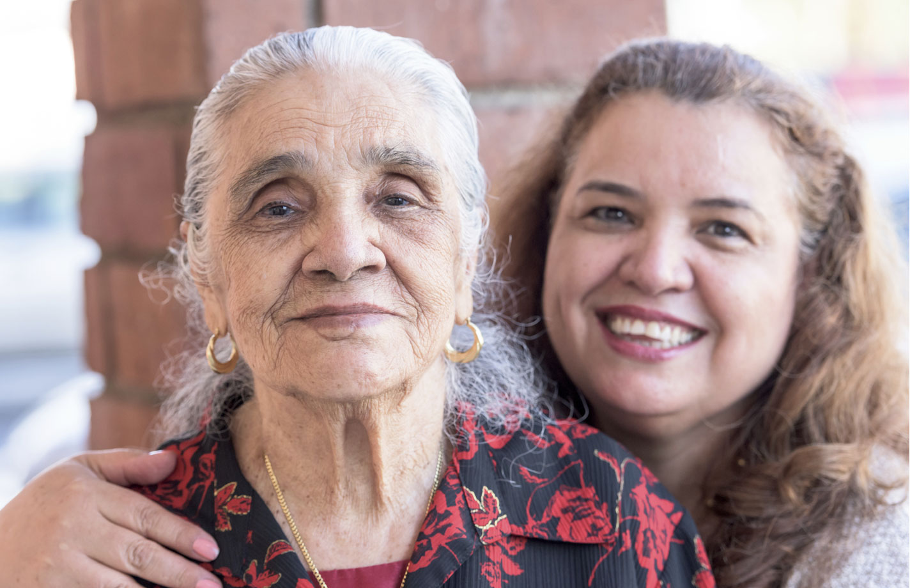

Superior 21st Century
Hybrid Library Technology
- SAW - Simplified Acces to the Web
- Personal Documents Archive/Organizer
- My$$ - Personal Finance/Budget Tool
- $5 Computer in the palm of your hand
Not everyone is comfortable using computers to find what they need. DLOS gives users with very little, or no experience using browsers a simplified view where they can touch a visual representation of the information they seek. Each DLOS screen provides helpful pointers and encourgament as the user views links to important information on a wide variety of topics.
 For example, patrons can touch the DLOS screen to see a local bus or rail schedule, watch a video to learn about community services available to them, apply for healthcare insurance, print tax forms, write local or state officials, safely store personal documents, access email and social media and much more!
Simplified Access to the Web (SAW)
The most compelling feature of SAW is that it allows the library administrator to provide the access points, custom descriptions, and helpful text for each of the DLOS screens. Here are just a few examples of access points that the local library community might identify as useful to various demographics among their patrons:- HOMELESS SUPPORT
- Caring Kitchen
- Homeless Shelter
- Veteran Support
- Clothing&Hygiene
- HEALTH INSURANCE
- Affordable Care Act
- Medicare
- Medicaid
- FINANCIAL ASSISTANCE
- Welfare
- Food Stamps (EBT)
- Homeless Assistance
- AVDA (Aid to Vicitims of Abuse)
- Soup Kitchen
- RECOVERY SUPPORT
- Substance Abuse Hotline
- Divorce Recovery
- Grief Recovery
- JOBS/EMPLOYMENT
- Local Job Listing
- Resume Builder
- Volunteer Opportunities
- HEALTH&FITNESS
- Parks&Recreation
- Find a Doctor
- Find a Hospital
- Find a Health Club
- FAMILY SUPPORT
- Planned Parenthood
- Aftercare
- Summer Camp
- Find a church
- Local Activity Calendar
- TRANSPORTATION
- Train Schedules
- Bus Schedules
- Free Shuttle Services
- DMV